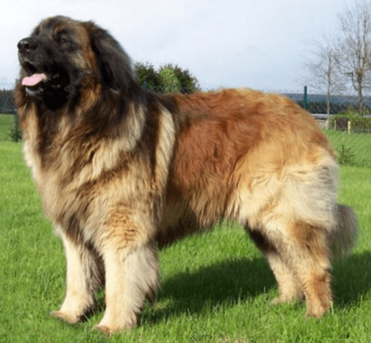

Le léonberg, les Alpes rhétiques d'Autriche (Allemagne)
Le léonberg est un chien originaire d'Allemagne, de la ville de Léonberg, d'où le nom de la race.
C'est un chien immense, probablement l'une des race les plus grosse qui soit. Il peut peser jusqu'à 140 lbs. Sa taille est très impressionnante! C'est pourquoi il est préférable de l'habituer très tôt à le promener en laisse, sinon c'est lui vous promènera!
Il est au tempéremment très doux et très calme. Il est très obéissant envers sa famille et cajoleux. Il n'a pas tendance à sauter sur les gens ou à être surrexcité.
source de l'image: blogcanin.com/le-leonberg
Il est parmis les chiens ayant l'ossature la plus imposante. C'est un chien puissant et très fort. Mais sous sa puissance ce cache un gros nounours rempli d'amour!